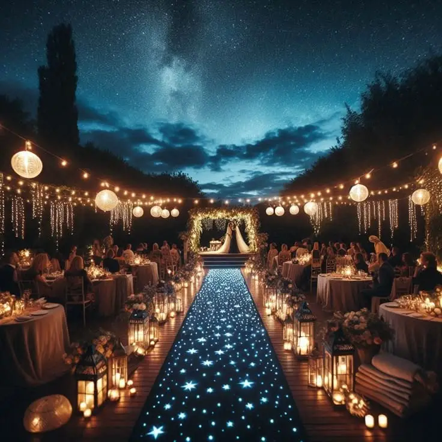

The wedding in 2026 is becoming an unforgettable celebration, combining technology, creativity and personalisation. Couples now want to offer their guests immersive, experiential moments that go far beyond traditional weddings.
Why choose an immersive celebration?
Immersive weddings offer much more than a simple ceremony. They create lasting, unique memories for the couple and their guests. By immersing everyone in a themed, technological world, these celebrations make for intense emotional experiences and strengthen the bonds between guests. Every detail is designed to surprise and amaze, making the wedding unforgettable.
1. Technology and virtual reality
The weddings of this new era incorporate impressive technological advances. Virtual reality lets couples marry in breathtaking settings, real or imaginary. Guests wearing VR headsets can attend the ceremony as if they were there, even thousands of kilometres away. Imagine exchanging vows in a medieval castle, under a starry sky or in a futuristic landscape worthy of science fiction.
2. Themed decor and atmospheres
Themed weddings are booming. Couples choose themes that reflect their personality and passions. Decor, outfits and even menus are carefully selected to immerse guests in a unique world. Whether it is a journey back in time to the Roaring Twenties, a fantasy adventure in an enchanted kingdom or an exotic celebration inspired by cultural traditions from around the world, every detail is designed to create an unforgettable experience.


3. Interactive culinary experiences
Food takes on a new dimension at the weddings of 2025. Chefs offer interactive menus where guests can take an active part in preparing the dishes. Cooking workshops, live demonstrations and themed tastings add a sensory, participatory dimension to the celebration. Guests can discover new flavours while sharing a convivial moment with the couple.
4. Innovative entertainment
Traditional entertainment is giving way to innovative shows. Light-up drone displays, holographic projections and immersive artistic performances are on the programme. Guests can take part in interactive games, creative workshops or playful activities that strengthen the sense of community and sharing. Street artists, musicians and dancers add a touch of magic and emotion to the party.
5. Personalisation and unforgettable keepsakes
Personalisation is at the heart of the weddings of 2025. Every detail is designed to reflect the couple's tastes and stories. Personalised gifts, bespoke decor and experiences make each wedding truly unique. Wedding keepsakes are taking new forms too, with augmented-reality photo albums, immersive 360-degree videos and interactive digital souvenirs that guests can take home.
6. Ecology and sustainability
In this new era, eco-responsible weddings are growing in popularity, especially in the Bordeaux region. Couples are looking to reduce their carbon footprint by choosing sustainable options, such as recyclable decorations, organic and local menus and digital invitations. Eco-responsible venues and green gestures, such as planting trees in the couple's honour, are becoming favoured choices for those who want to celebrate their union while respecting the environment.
7. Rituals and symbolic ceremonies
The wedding in 2025 is also reinventing itself through unique rituals and symbolic ceremonies. Couples create moments full of personal meaning, such as unity ceremonies, personalised vows or rituals inspired by their cultures and family traditions. These special moments strengthen bonds and add a deep, spiritual dimension to the celebration.

A couple's testimonial
"We chose an immersive wedding in the Bordeaux region to surprise our guests and create a magical atmosphere. Virtual reality allowed our loved ones abroad to attend our ceremony as if they were there. The themed sets and interactive entertainment made our wedding an unforgettable experience for everyone. It was much more than a simple celebration; it was a real journey."
Marine & Jean
Tips for a successful immersive wedding
- Plan ahead: immersive weddings require meticulous organisation. Start preparing early so you have time to perfect every detail.
- Choose a theme that reflects you: opt for a theme that mirrors your personality and shared passions.
- Call on professionals: hire experts in decor, technology and entertainment to guarantee a successful immersive experience.
- Think of your guests: make sure the entertainment and experiences on offer are accessible and appeal to all your guests.
Budget
What budget do you need for this style of celebration? Immersive weddings can cost more than traditional weddings because of the advanced technology and elaborate themed decor involved. Prepare a detailed, realistic budget covering every aspect, from technological equipment to professional services.
Advantages
- A unique, memorable experience: immersive weddings offer unforgettable moments for the couple and their guests.
- Maximum personalisation: every detail can be adapted to the couple's tastes and passions.
- Interactivity and participation: guests are actively involved in the celebration, which strengthens bonds and creates a convivial atmosphere.
Drawbacks
- High cost: immersive weddings can require a substantial budget.
- Complex organisation: planning and coordination take considerable time and effort.
- Technological accessibility: some guests may not be familiar with the technologies used, which can limit their participation.
My view as a professional
"Immersive, experiential weddings are increasingly requested by modern couples in the Bordeaux region. They make it possible to personalise every detail and create unique, memorable moments. As an events professional, I highly recommend this approach for anyone who wants to offer their guests an extraordinary experience."
Alexandra Ambert
In short…
The weddings of 2025 in Bordeaux are much more than simple traditional ceremonies. They embody a new era of immersive, unforgettable celebrations, where technology, creativity and personalisation come together to create indelible memories. Today's couples have the power to turn their dreams into reality, offering their loved ones unique, magical experiences that will stay etched in their memories forever.
Lovely Day Event offers several services
Wedding planning
I step in at every stage of your preparations and guide you through your choices, bringing ideas and suggestions so that your wedding looks like no one but you.
Wedding design
Creative and passionate, I am a certified Wedding Designer and I create a scenographic atmosphere that matches the theme of your wedding.
On-the-day coordination
I will be the conductor of your day, managing the suppliers, the set-up of your decor and the smooth running of this beautiful day.